1학년 공통국어1 24문항, 2학년 문학 26문항 — 50문항 전부를 유형·개념·판단 단위로 해부했습니다.
지문에서 확인만 하면 열리는 점수는 1학년 15.4점, 2학년 7.1점. 나머지는 해석하고, 적용하고, 판정해야 열립니다.
두 학년 모두 서술형 없이 선다형 소수점 배점으로만 100점을 짰습니다. 그런데 배점은 읽기가 아니라 판단에 실렸습니다 — 문법 개념을 처음 보는 예문에 적용하고, 낯선 이론과 외부 작품을 〈보기〉로 결합하고, 옳은 진술을 '있는 대로' 골라야 열립니다.
두 학년 시험지에서 반복적으로 확인되는 출제 코드는 세 가지입니다.
24문항 전부를 유형·개념·판단 지점까지 문항 단위로 해부했습니다.
어느 영역의 어떤 판단에서 점수가 갈리는지 확인한 기록입니다.
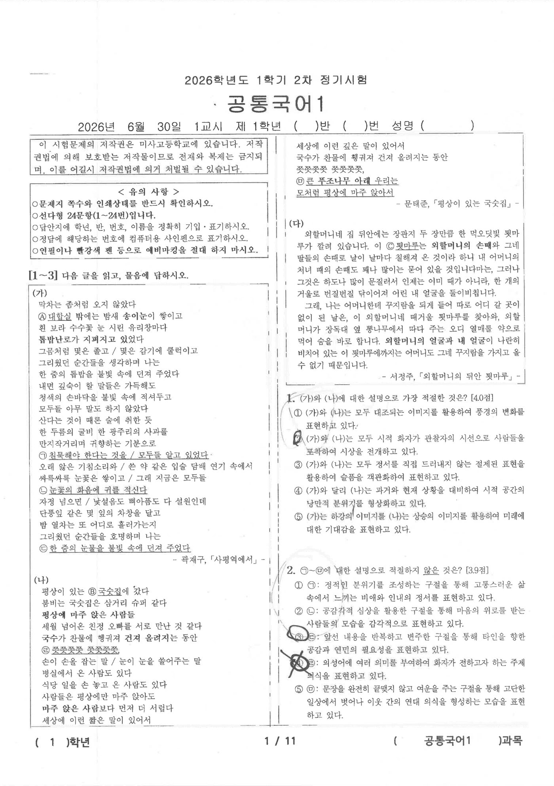
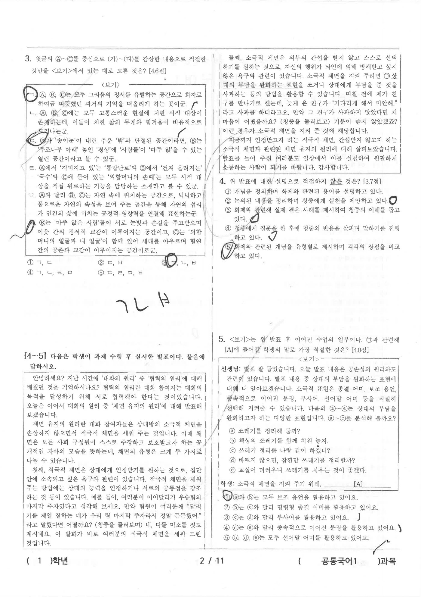
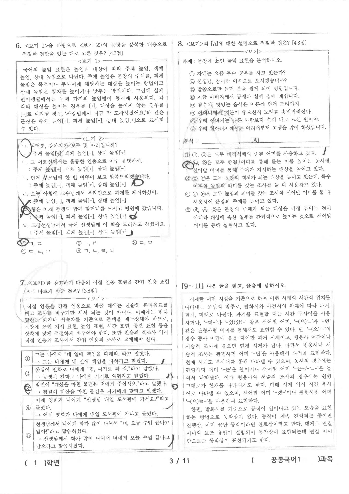
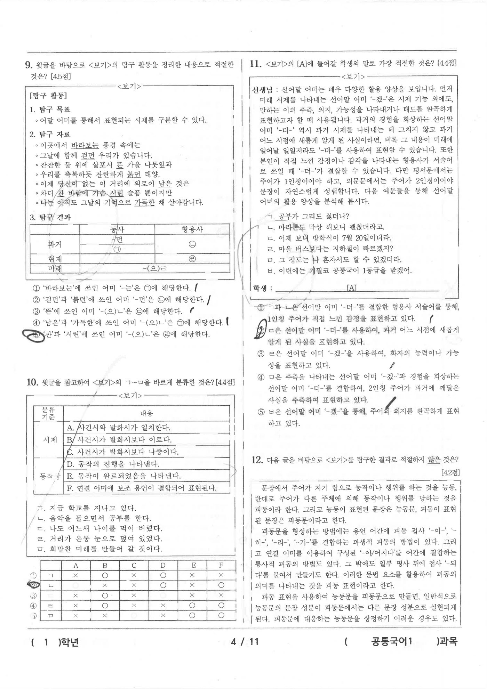
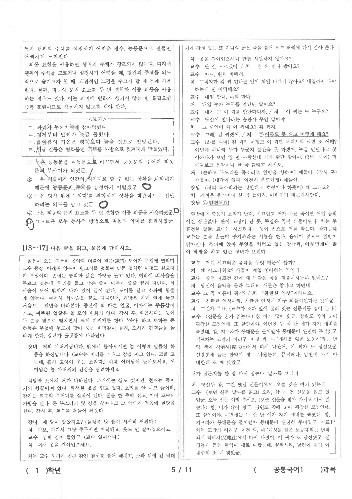
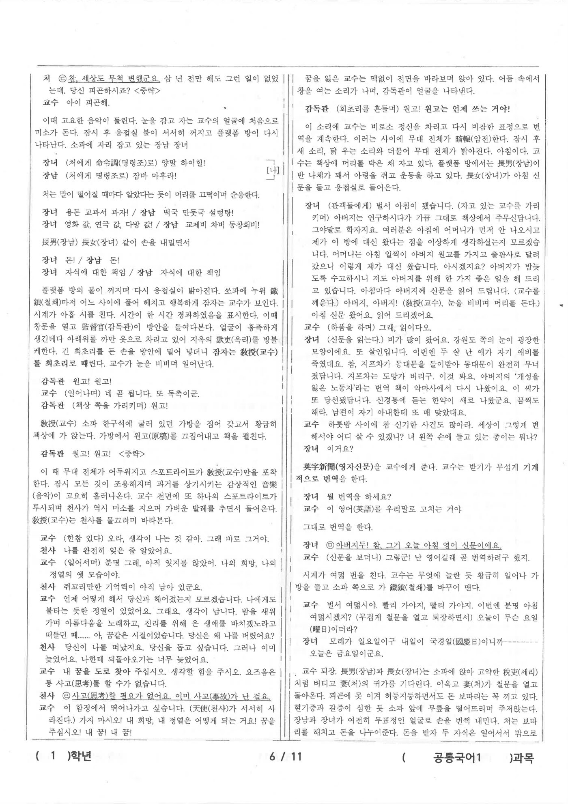
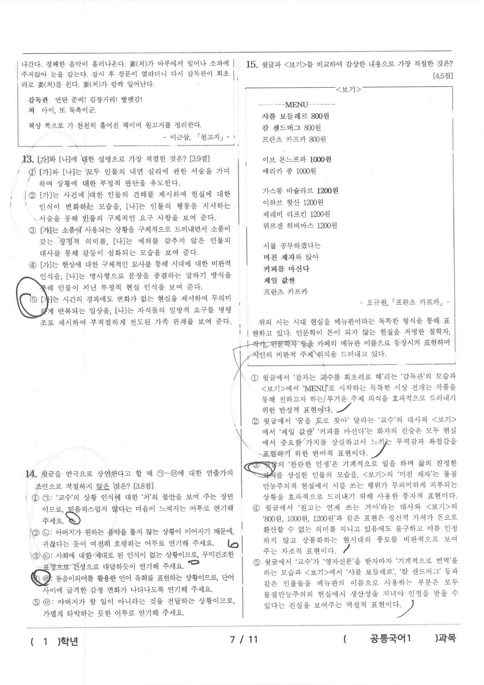
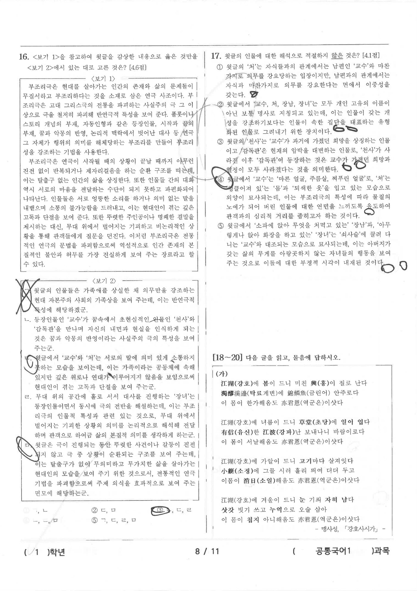
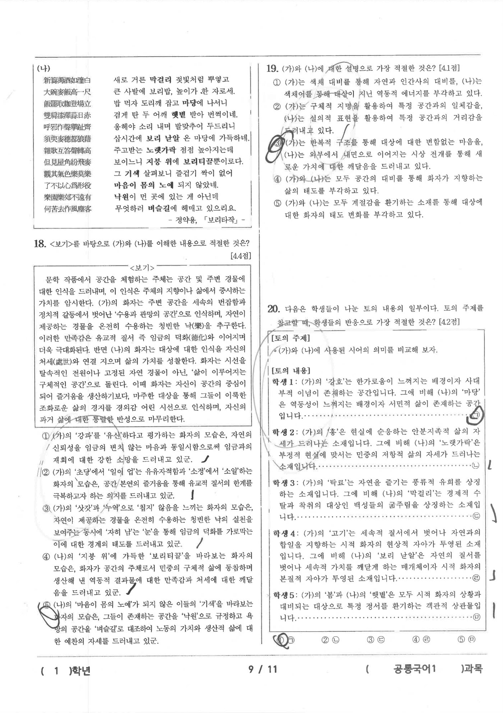
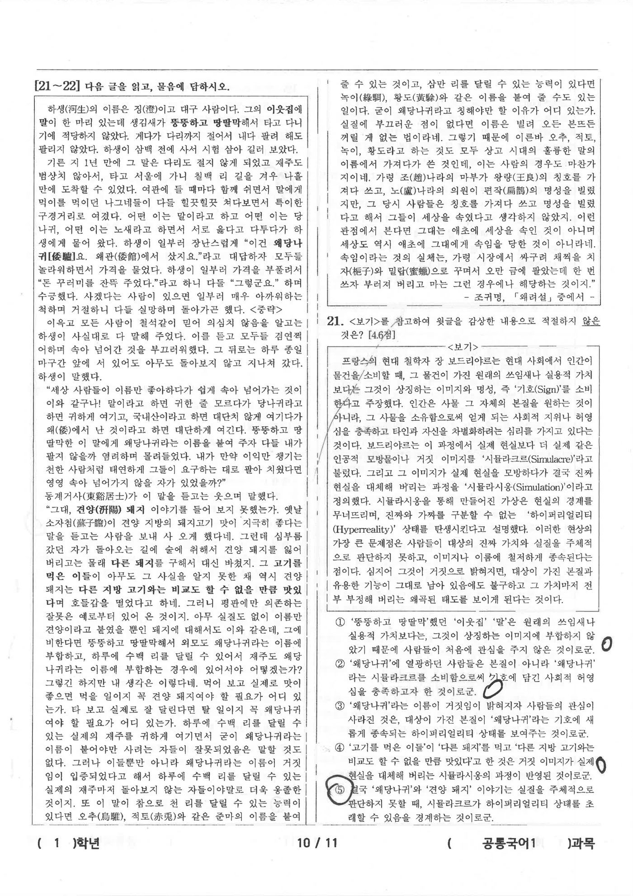
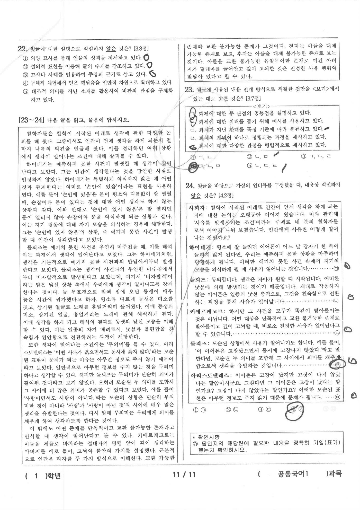
전 문항의 배점을 시험지 이미지에서 두 번 독립 판독해 교차 검산하고(합계 100.0 일치), 유형·개념·출제 포인트를 문항 단위로 확정한 표입니다.
| 번호 | 배점 | 난이도 | 유형 | 물어보는 개념 | 출제 포인트 · 함정 | 어디서 왔나 |
|---|---|---|---|---|---|---|
| 1 | 4 | 표준 | 표현상 특징 | 두 현대시의 공통 표현 방식(시선과 이미지) | '시적 화자가 관찰자의 시선으로 사람들을 포착'처럼 (가)(나) 모두에 성립하는 진술인지, 한쪽에만 맞는 진술인지에서 갈림 | 곽재구 「사평역에서」·문태준 「평상이 있는 국숫집」·서정주 「외할머니의 뒤안 툇마루」 — 현대시 2편+수필 복합 |
| 2 | 3.9 | 표준 | 구절의 의미 | 밑줄 친 구절 ㉠~㉤의 기능과 정서 | ㉣ 의성어 '쫏쫏쫏쫏'에 '여러 의미를 부여'했다는 서술처럼 구절의 기능을 과잉 규정한 선지를 걸러내는 판단 | 곽재구 「사평역에서」·문태준 「평상이 있는 국숫집」·서정주 「외할머니의 뒤안 툇마루」 — 현대시 2편+수필 복합 |
| 3 | 4.6 | 킬러 | 외적 준거(〈보기〉) 적용 | 대합실·국숫집·툇마루 세 공간의 성격 비교 | '그리움 유발 공간'·'열린 공간'·'혈연 간 교감' 등 ㄱ~ㅂ 6개 진술을 세 작품 교차로 전수 판정하는 합답형 — 일부만 맞는 진술의 처리에서 갈림 | 곽재구 「사평역에서」·문태준 「평상이 있는 국숫집」·서정주 「외할머니의 뒤안 툇마루」 — 현대시 2편+수필 복합 |
| 4 | 3.7 | 기본 | 말하기 방식 | 발표에 쓰인 전략 확인 | '개념을 유형별로 제시하며 각각의 장점을 비교'처럼 실제로 하지 않은 전략 하나를 발표문 표면에서 확인 | 학생 발표 '대화의 원리 — 체면 유지의 원리' — 화법 담화 |
| 5 | 4 | 까다로움 | 문법 개념 적용(화법 융합) | 부담을 완화하는 공손 표현의 문법적 실현 방식 | ⓐ~ⓔ 각 문장에서 보조 용언·명령형 종결 어미·부사어·종속적으로 이어진 문장·선어말 어미의 사용 여부를 문장 단위로 대조 | 학생 발표 '대화의 원리 — 체면 유지의 원리' — 화법 담화 |
| 6 | 4.3 | 까다로움 | 문법 개념 적용 | 주체·객체·상대 높임의 [+][-] 판정 | '여쭈어 보고 말씀드리겠습니다' 같은 문장에서 객체 높임 실현 요소를 놓치면 [±] 표기 전체가 어긋나는 합답형 | 높임 표현 — 문법 〈보기〉 자료 |
| 7 | 3.8 | 표준 | 문법 개념 적용 | 직접 인용을 간접 인용으로 바꾸는 규칙 | 지시 표현('여기로'→'거기로')·높임·시간 표현·종결 표현('-냐고/-으라고')을 동시에 바꿨는지 하나씩 대조 | 인용 표현 — 문법 〈보기〉 자료 |
| 8 | 4.3 | 까다로움 | 문법 개념 적용 | 8개 문장의 높임 표현 실현 요소 분석 | 종결 어미·선어말 어미 '-시-'·조사 '께서/께'·특수 어휘의 결합 양상을 ㉠~ⓞ 전 문장에서 확인 — '손이 배로 크신'류 간접 높임 판별 포함 | 높임 표현 분석 과제 — 문법 〈보기〉 자료 |
| 9 | 4.5 | 표준 | 문법 개념 적용 | 관형사형 어미로 표현되는 시제 구분 | 형용사에 '-(으)ㄴ'이 붙으면 현재 시제가 된다는 지문 규칙을 '찬/시린'과 '남은/가득한'에 나눠 적용하는 데서 갈림 | 시제와 동작상 — 문법 설명 지문 |
| 10 | 4.4 | 까다로움 | 문법 개념 적용 | 시제(사건시·발화시)와 동작상의 이중 분류 | ㄱ~ㅁ 문장을 A~F 기준표(시제 3+동작상 3)에 O× 매트릭스로 대조 — 진행상·완료상과 연결 어미 결합 여부를 한 문장에서 겹쳐 판단 | 시제와 동작상 — 문법 설명 지문 |
| 11 | 4.4 | 까다로움 | 문법 개념 적용 | 선어말 어미 '-겠-'과 '-더-'의 의미 기능 | '-겠-'의 추측·의지·가능성 구분에 '-더-'의 인칭 제약(평서문 1인칭·의문문 2인칭)까지 겹쳐 예문 ㄱ~ㅂ을 판정 | 시제와 동작상 — 문법 설명 지문 |
| 12 | 4.2 | 표준 | 문법 개념 적용 | 파생적 피동·통사적 피동·이중 피동의 구분 | '찢겨지게' 같은 이중 피동과 '-되다' 결합을 식별하고 'ㄱ~ㄹ 모두 통사적 방법'류의 전체 묶음 진술을 검증 | 피동 표현 — 문법 설명 지문 |
| 13 | 3.9 | 표준 | 서술상 특징 | 두 장면 [가]·[나]의 기능 비교 | 3년 전 신문을 되풀이 읽는 [가]=변화 없는 반복 일상, 명령조로 돈을 요구하는 [나]=전도된 가족 관계라는 짝을 맞추는 판단 | 이근삼 「원고지」 — 희곡(부조리극) |
| 14 | 3.8 | 기본 | 구절의 의미(연출 적용) | 대사 ㉠~㉤의 어조를 연출 지시로 옮기기 | ㉣ 동음이의어 언어유희 장면에 '급격한 감정 변화' 지시가 어울리는지처럼 어조 지시와 상황의 어긋남을 확인 | 이근삼 「원고지」 — 희곡(부조리극) |
| 15 | 4.5 | 까다로움 | 작품 간 비교 | 희곡과 현대시의 비판적 표현 방식 비교 | 반성적·반어적·풍자적·자조적·역설적이라는 표현 명칭이 각 장면('회초리로 때리는 감독관', '제일 값싼 프란츠 카프카')에 맞게 붙었는지 판별 | 이근삼 「원고지」+〈보기〉 오규원 「프란츠 카프카」 — 희곡·현대시 비교 |
| 16 | 4.6 | 킬러 | 외적 준거(〈보기〉) 적용 | 부조리극 개념으로 작품 감상하기 | '꿈과 악몽의 반영=사실주의 극의 특성'처럼 〈보기1〉의 개념을 뒤집어 심은 진술을 ㄱ~ㅁ 전수 판정하는 이중 〈보기〉 합답형 | 이근삼 「원고지」 — 희곡(부조리극) |
| 17 | 4.1 | 표준 | 인물의 이해 | 인물의 이중성과 유형화 장치 해석 | '처'의 이중성, 보통 명사 지칭=유형화된 인물, '천사'·'감독관'의 상징까지는 성립하나 '연민을 유도해 심리적 거리를 좁힘'류의 부조리극과 어긋나는 해석을 골라내는 판단 | 이근삼 「원고지」 — 희곡(부조리극) |
| 18 | 4.4 | 까다로움 | 외적 준거(〈보기〉) 적용 | 공간 인식 준거로 두 시가 읽기 | (가)=수용과 관망의 공간, (나)=삶이 이루어지는 구체적 공간이라는 〈보기〉 구도에서 '임금과의 재회 소망'·'유교적 질서의 한계 극복'처럼 방향을 튼 선지를 걸러냄 | 맹사성 「강호사시가」·정약용 「보리타작」 — 고전시가·한시 복합 |
| 19 | 4.1 | 표준 | 표현상 특징 | 연시조와 한시의 표현 방식 비교 | (가)의 반복 구조('강호에~드니', '역군은이샷다')와 (나)의 외부→내면 시상 전개가 한 선지에 함께 성립하는지 확인 | 맹사성 「강호사시가」·정약용 「보리타작」 — 고전시가·한시 복합 |
| 20 | 4.2 | 까다로움 | 시어의 의미 | 두 작품 시어의 짝 비교(강호/마당, 탁료/막걸리 등) | '노랫가락=저항적 삶', '막걸리=수탈의 상징'처럼 대응의 방향을 부풀린 반응 속에서 성립하는 비교 하나를 고르는 판단 | 맹사성 「강호사시가」·정약용 「보리타작」 — 고전시가·한시 복합 |
| 21 | 4.6 | 킬러 | 외적 준거(〈보기〉) 적용 | 시뮬라크르 이론으로 고전 수필 읽기 | 보드리야르의 기호 소비·시뮬라시옹·하이퍼리얼리티 개념을 왜당나귀·견양 돼지 일화에 대응시키는 5개 선지를 전부 정밀 대조 — 개념과 사례의 어긋난 연결 하나를 찾는 판단 | 조귀명 「왜려설」+〈보기〉 보드리야르 이론 — 고전수필(설) |
| 22 | 3.8 | 기본 | 서술상 특징 | 수필의 서술 방식 확인 | 외양 묘사·설의·고사 인용·대조적 소재는 지문에 있으므로 '구체적 체험에서 얻은 깨달음의 일반화' 성립 여부만 남는 소거형 | 조귀명 「왜려설」 — 고전수필(설) |
| 23 | 3.7 | 표준 | 전개 방식 | 설명문의 내용 전개 방식 파악 | '예시 사용'과 '다양한 관점의 병렬 제시'는 지문과 맞고 '두 관점의 공통점 설명'·'개념이 하나로 정립되는 과정'의 성립 여부에서 갈리는 합답형 | 사유의 발생 조건(하이데거·들뢰즈·아리스토텔레스·키에르케고르) — 독서(인문) |
| 24 | 4.2 | 표준 | 내용 일치(구체적 상황 적용) | 철학자별 견해를 가상 인터뷰 발화로 검증 | 들뢰즈의 '비자발적 발생'을 '자아가 원할 때 시작된다'로 뒤집은 발화처럼, 지문 견해와 인터뷰 대사의 어긋남을 인물별로 대조 | 사유의 발생 조건(하이데거·들뢰즈·아리스토텔레스·키에르케고르) — 독서(인문) |
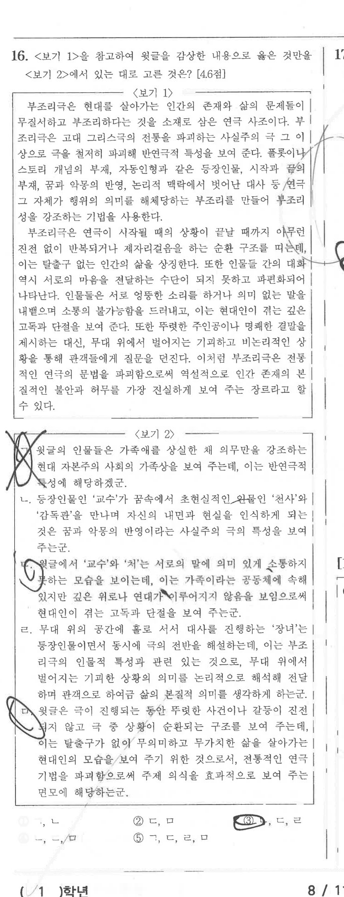
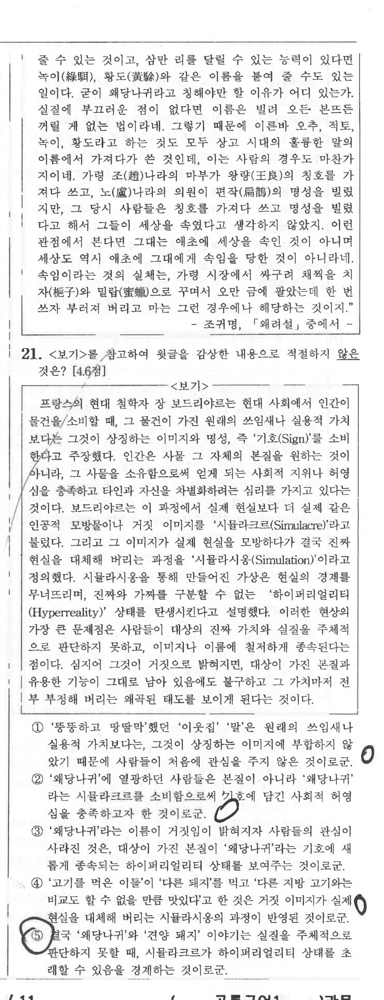
이 시험 앞에서는 익숙한 세 가지 공부법이 힘을 쓰지 못한다. 작품마다 줄거리와 주제를 암기하는 공부는 세 작품을 교차 판정시키고 낯선 이론을 〈보기〉로 붙이는 문항 앞에서 멈추고, 높임법·피동 표를 외우는 문법 공부는 예문 ㄱ~ㅁ을 기준표에 O×로 대조시키는 적용형 앞에서 멈춘다. 기출 답을 외우는 반복 풀이도 '있는 대로 고른 것' 합답형처럼 진술 전부의 근거를 요구하는 형식에는 통하지 않는다.
26문항 전부를 작품·유형·판단 지점까지 문항 단위로 해부했습니다.
본문 밖에서 어떤 작품이 결합됐는지까지 확인한 기록입니다.
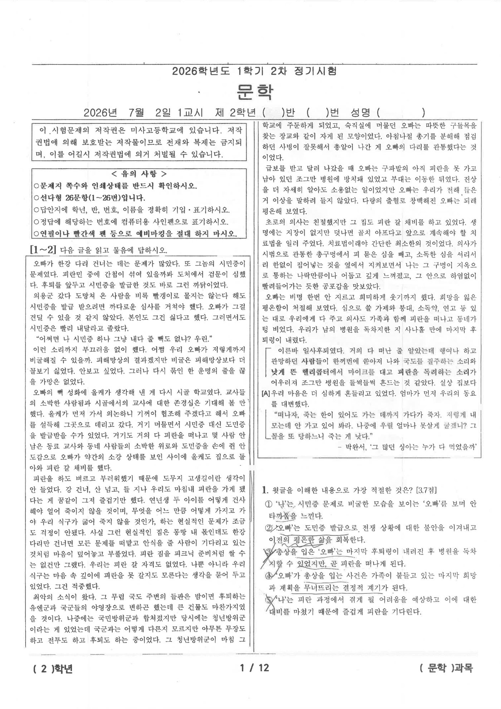
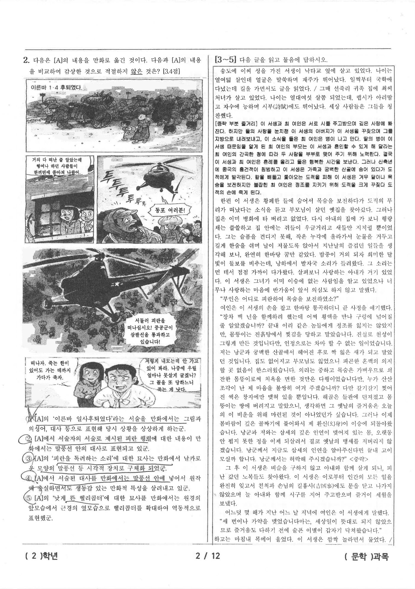
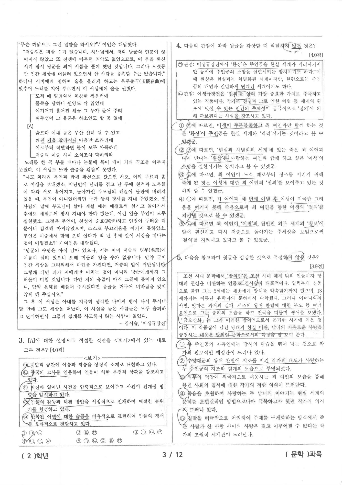
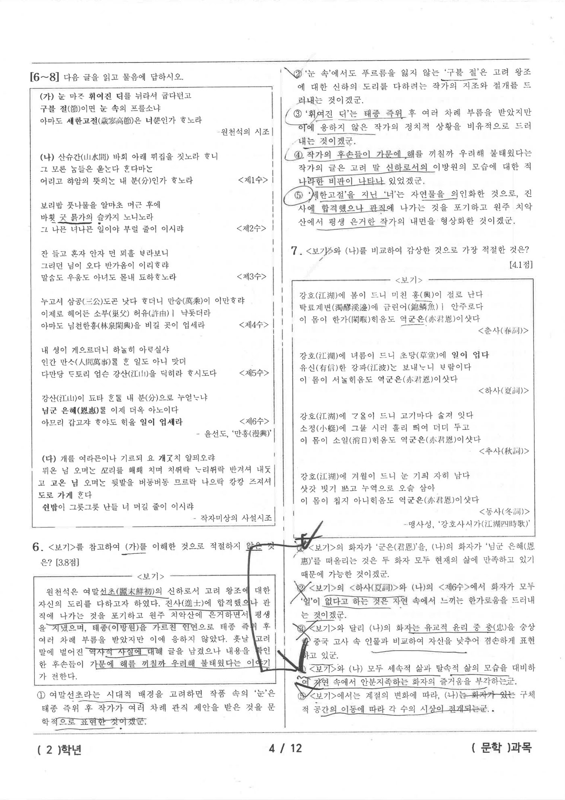
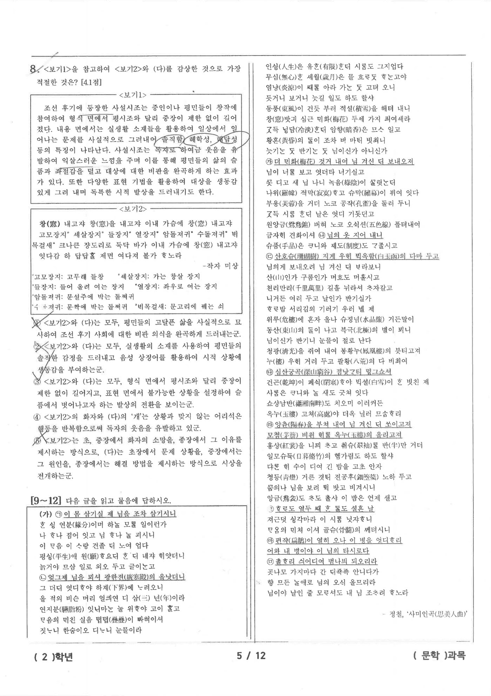
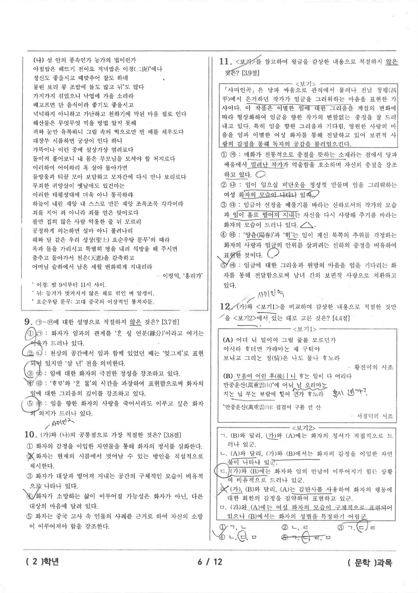
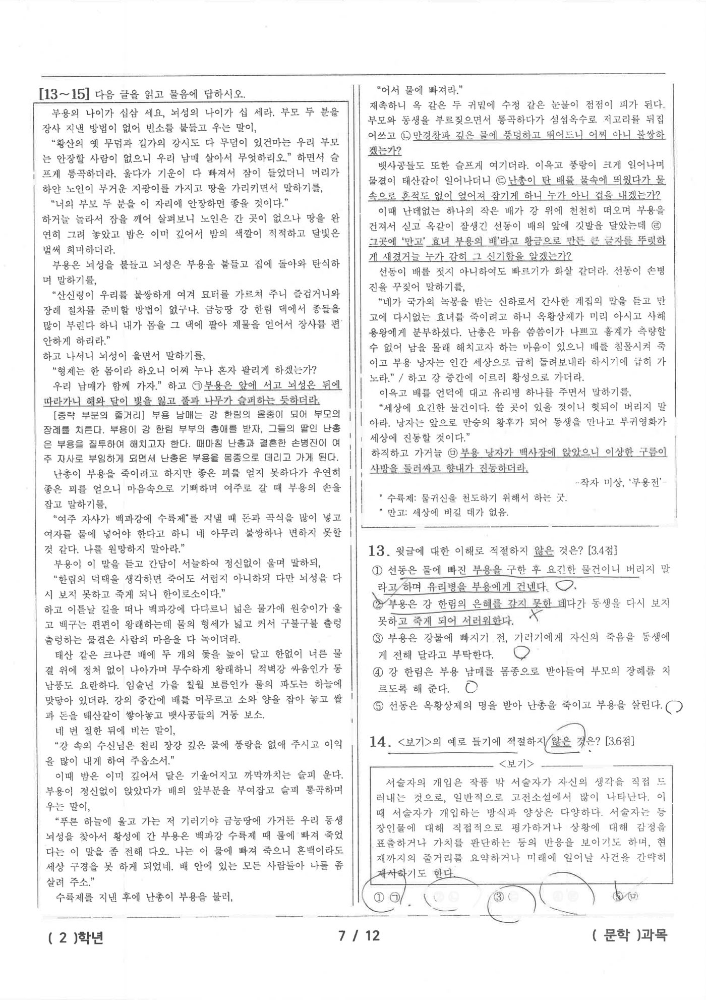
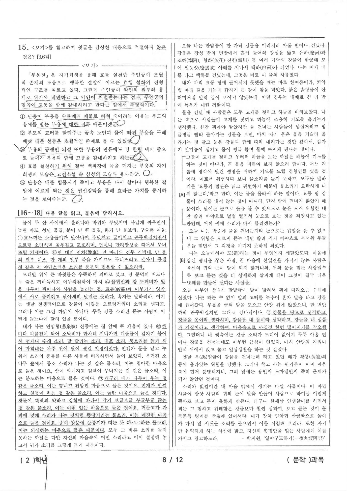
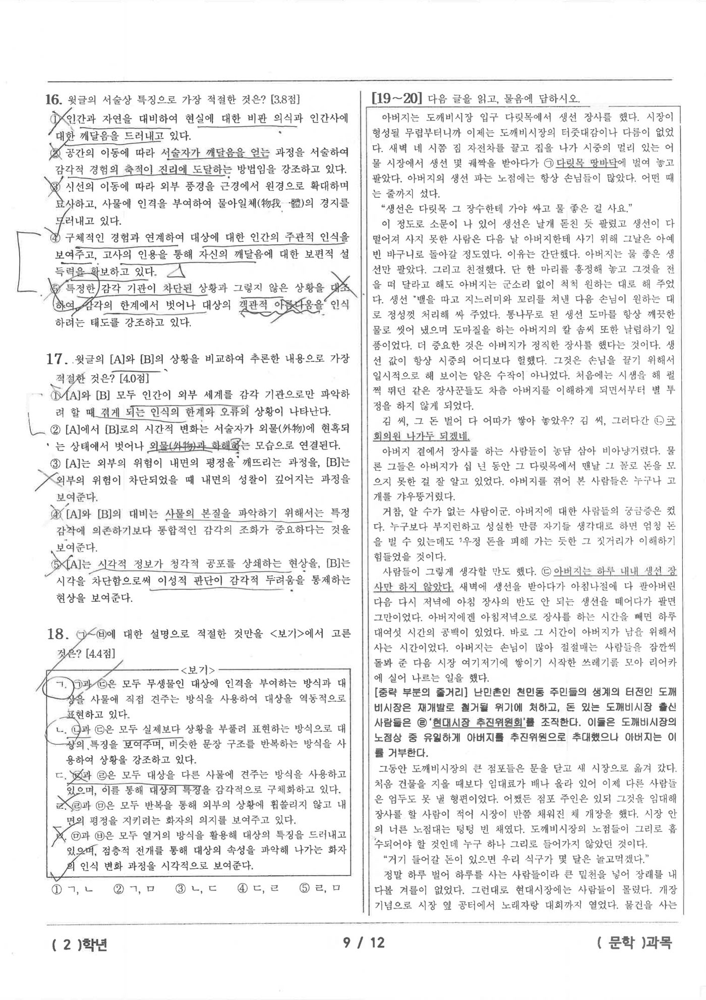
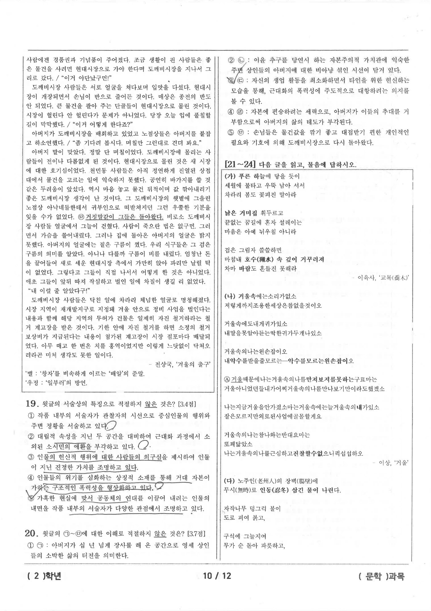
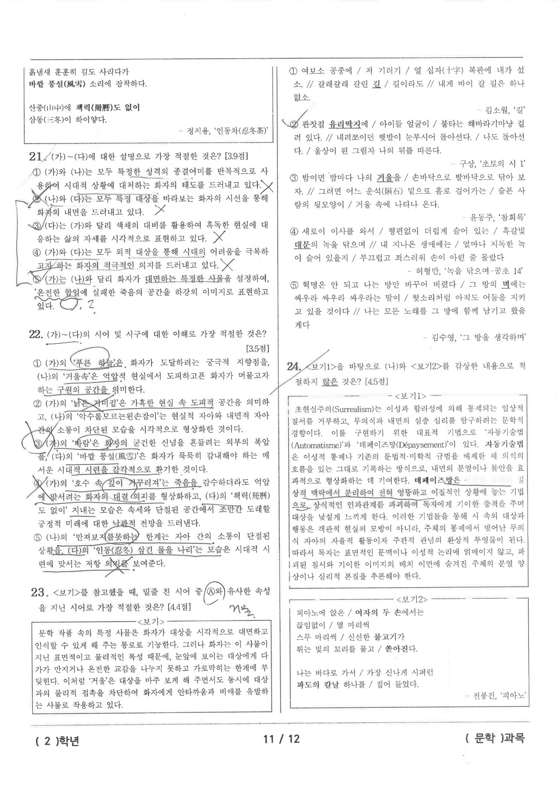
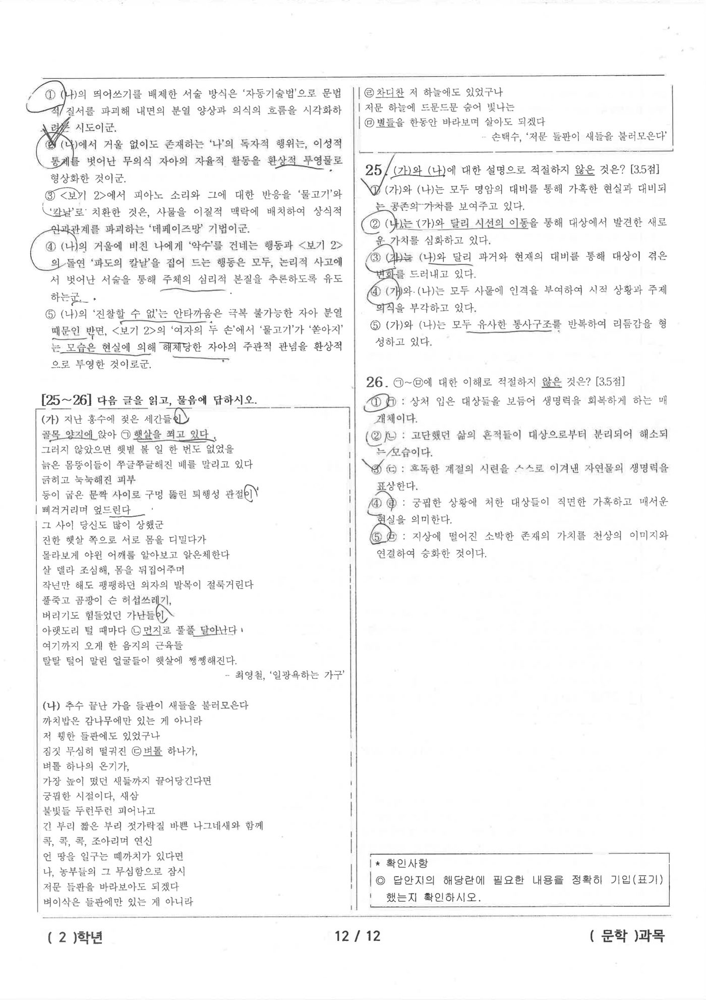
전 문항의 배점을 시험지 이미지에서 두 번 독립 판독해 교차 검산하고(합계 100.0 일치), 유형·개념·출제 포인트를 문항 단위로 확정한 표입니다.
| 번호 | 배점 | 난이도 | 유형 | 물어보는 개념 | 출제 포인트 · 함정 | 어디서 왔나 |
|---|---|---|---|---|---|---|
| 1 | 3.7 | 표준 | 내용 일치(인물·사건) | 전쟁 피란 상황에서 인물의 심리와 사건 전개 파악 | '오빠'의 도민증 발급이 불안 극복·평온 회복으로 이어졌는지 등 심리 서술의 인과를 지문과 대조하는 데서 갈림 | 박완서 「그 많던 싱아는 누가 다 먹었을까」 — 현대소설 |
| 2 | 3.4 | 기본 | 매체 변용(만화) 비교 감상 | 소설 서술 [A]를 만화로 옮긴 매체 전환의 효과 비교 | "원경의 앞모습에서 근경의 옆모습으로" 같은 그림 연출 진술이 실제 만화 컷과 일치하는지 컷 단위 대조 | 박완서 「그 많던 싱아는 누가 다 먹었을까」 — 현대소설(만화 변용) |
| 3 | 4 | 까다로움 | 표현상 특징(조합형) | 삽입 노래 [A]의 표현 방식(상징·비유·시상 전개) | '중국의 고사 인용' 여부처럼 ㉠~㉤ 각각을 판정해야 하는 '있는 대로 고르기' — 하나만 오판해도 조합이 어긋남 | 김시습 「이생규장전」 — 고전소설(전기) |
| 4 | 4 | 까다로움 | 외적 준거(관점) 적용 | '환상'과 '절의' 두 관점으로 작품 감상 | ④ "이생이 죽음으로써 절의를 지켰다"처럼 관점 진술을 인물·사건에 잘못 연결한 선지를 걸러내는 2단 판단 | 김시습 「이생규장전」 — 고전소설(전기) |
| 5 | 3.9 | 표준 | 외적 준거(〈보기〉) 적용 | 작가 김시습의 생애(방외인)와 작품의 연결 | 최 여인의 정조 수호를 "봉건 사회 질서에 대한 저항"으로 읽는 선지 — 절의 존중과 체제 비판의 구분에서 갈림 | 김시습 「이생규장전」 — 고전소설(전기) |
| 6 | 3.8 | 표준 | 외적 준거(〈보기〉) 적용 | 원천석의 행적(〈보기〉)을 시조의 시어 해석에 적용 | 후손이 불태운 글에 "이방원 비판이 나타나 있었겠군"처럼 〈보기〉가 보증하지 않는 단정을 판별 | 원천석 시조·윤선도 「만흥」·사설시조 — 고전시가 복합 |
| 7 | 4.1 | 까다로움 | 작품 간 비교 | 「만흥」과 「강호사시가」의 자연관·임금 의식 비교 | '역군은'과 '님군 은혜'의 공통 지향, ⑤ "계절 변화 vs 공간 이동" 시상 전개 대비가 실제 텍스트와 맞는지 확인 | 윤선도 「만흥」 + 〈보기〉 맹사성 「강호사시가」 — 고전시가 복합 |
| 8 | 4.1 | 까다로움 | 외적 준거 적용+작품 간 비교 | 사설시조 갈래 특징(〈보기1〉)을 두 작품에 적용 | ③ "불가능한 상황 설정과 발상의 전환"이 (다)에도 성립하는지 — 갈래 일반론을 개별 작품에 그대로 얹는 선지 판별 | 사설시조 「개를 여라믄이나…」 + 〈보기2〉 「창 내고쟈」 — 고전시가 복합 |
| 9 | 3.7 | 표준 | 구절의 의미 | 「사미인곡」 주요 구절 ㉠~㉤의 의미 | ㉤ '범나븨 되오리라'를 죽어서도 임을 따르려는 의지로 읽는 선지 등 구절별 화자 정서의 정확한 파악 | 정철 「사미인곡」·이방익 「홍리가」 — 가사 복합 |
| 10 | 3.8 | 표준 | 작품 간 비교(공통점) | 「사미인곡」과 「홍리가」의 공통점 찾기 | ④ "소망 실현이 다른 대상(임·성상)의 마음에 달려 있다"가 두 작품 모두에서 성립하는지 — 두 텍스트 동시 검증 | 정철 「사미인곡」·이방익 「홍리가」 — 가사 복합 |
| 11 | 3.9 | 표준 | 외적 준거(〈보기〉) 적용 | 창작 배경(은거·연군)을 바탕으로 한 감상 | ⑤ '원망의 마음'까지 전달한다는 진술 — 〈보기〉의 '변함없는 충정' 규정과 어긋나는 지점 판별 | 정철 「사미인곡」 — 가사 복합 |
| 12 | 4.4 | 킬러 | 작품 간 비교(조합형) | 가사와 시조 2편(황진이·서경덕)의 화자·표현 비교 | 감정 이입 자연물, 여성 화자 구체화, 감탄사 사용 등 ㄱ~ㅁ 5개 진술을 3작품에 각각 대응시키는 '있는 대로 고르기' | 정철 「사미인곡」 + 〈보기1〉 황진이·서경덕 시조 — 가사·시조 복합 |
| 13 | 3.4 | 기본 | 내용 일치 | 「부용전」 사건·인물의 사실 확인 | ② "강 한림의 은혜를 감지 못한 데다가" — 부용의 유언("한림의 덕택을 생각하면 죽어도 서럽지 아니하되")과 정반대인 진술 판별 | 작자 미상 「부용전」 — 고전소설 |
| 14 | 3.6 | 표준 | 서술상 특징(개념 적용) | 서술자의 개입(편집자적 논평) 개념을 밑줄에 적용 | ㉠~㉤ 중 "누가 아니 겁을 내겠는가"류 개입과 단순 상황 서술의 구분 | 작자 미상 「부용전」 — 고전소설 |
| 15 | 3.6 | 표준 | 외적 준거(〈보기〉) 적용 | 효행 설화의 전형 구조(〈보기〉)에 따른 감상 | ③ "부용의 만류에도" 뇌성이 함께 종이 되었다는 세부 — 혈육이 고통을 함께 감내한다는 〈보기〉 진술의 지문 근거 확인 | 작자 미상 「부용전」 — 고전소설 |
| 16 | 3.8 | 표준 | 서술상 특징 | 고전수필의 서술 방식(경험에서 깨달음으로) | ④ "고사 인용으로 보편적 설득력 확보" — 우 임금 고사가 실제 그렇게 쓰였는지, 유사 진술 ②와의 구분 | 박지원 「일야구도하기」 — 고전수필 |
| 17 | 4 | 까다로움 | 구절·상황 비교 추론 | 낮과 밤의 강 건너기([A]·[B]) 대비의 의미 추론 | 감각이 한쪽으로 쏠릴 때의 인식 문제 — ① '인식의 한계와 오류'와 ④ '통합적 감각의 조화' 중 글의 논지(마음의 문제)에 맞는 쪽 판별 | 박지원 「일야구도하기」 — 고전수필 |
| 18 | 4.4 | 까다로움 | 표현상 특징(조합형) | 밑줄 ㉠~㉥의 표현 기법(의인·과장·열거 등) 판별 | ㄱ~ㅁ 각 진술의 앞뒤 절반("~방식을 사용하고"+"~효과가 있다")이 모두 성립해야 하는 2중 검증 조합형 | 박지원 「일야구도하기」 — 고전수필 |
| 19 | 3.4 | 기본 | 서술상 특징 | 작품 내부 관찰자 시선의 서술상 특징 | ⑤ "공동체의 연대를 이끌어 내려는 인물"처럼 지문에 없는 행위를 얹은 선지 판별 | 전상국 「겨울의 출구」 — 현대소설 |
| 20 | 3.7 | 표준 | 구절의 의미 | ㉠~㉤ 구절이 담은 인물·사회의 의미 | ㉢ 아버지의 봉사 활동을 "근대화의 폭력성에 주도적으로 대항"으로 읽는 과잉 해석 판별 | 전상국 「겨울의 출구」 — 현대소설 |
| 21 | 3.9 | 까다로움 | 작품 간 비교(표현·태도) | 세 현대시의 표현 방식과 화자 태도 비교 | ⑤ (가)의 '호수'를 죽음의 공간·하강 이미지로 보는 진술과 ① 종결어미 반복 — 세 편의 표현 사실을 각각 확인해야 함 | 이육사 「교목」·이상 「거울」·정지용 「인동차」 — 현대시 복합 |
| 22 | 3.5 | 표준 | 시어·시구의 의미 | 상징 시어('푸른 하늘'·'바람'·'바깥 풍설' 등)의 의미 | 한 선지가 두 작품의 시어를 동시에 규정 — 한쪽만 맞는 반쪽짜리 선지에서 갈림 | 이육사 「교목」·이상 「거울」·정지용 「인동차」 — 현대시 복합 |
| 23 | 4.4 | 킬러 | 외적 준거 적용+시어 대응(외부 작품) | '거울'의 이중 속성(보게 하지만 만질 수 없게 함)과 유사한 시어 찾기 | 김소월·구상·윤동주·허형만·김수영 시 5편에서 매개이자 차단물인 사물을 찾는 대응 — 낯선 외부 텍스트 5편의 즉석 해석이 필요 | 이상 「거울」 + 선지 5편(김소월·구상·윤동주·허형만·김수영) — 현대시 복합 |
| 24 | 4.5 | 킬러 | 외적 준거(〈보기〉) 적용 | 초현실주의 기법(자동기술법·데페이즈망)으로 두 시 감상 | ⑤ "현실에 의해 해체당한 자아"류 진술이 〈보기1〉의 '무의식 자아의 자율적 활동' 규정과 충돌하는 지점 판별 | 이상 「거울」 + 〈보기2〉 전봉건 「피아노」 — 현대시 복합 |
| 25 | 3.5 | 표준 | 작품 간 비교 | 두 현대시의 발상·표현 공통점과 차이 | ④ "사물에 인격 부여"가 두 시 모두에서 성립하는지, ② '시선의 이동' 같은 반쪽 진술 판별 | 최영철 「일광욕하는 가구」·손택수 「저문 들판이 새들을 불러모은다」 — 현대시 복합 |
| 26 | 3.5 | 표준 | 구절·소재의 의미 | ㉠~㉤ 소재('햇살'·'먼지'·'벼톨'·'별들')의 기능 | ⑤ '별들'을 "천상의 이미지로 승화"로 읽는 것이 시의 맥락과 맞는지, ㉣ '차디찬 하늘'의 의미 판별 | 최영철 「일광욕하는 가구」·손택수 「저문 들판이 새들을 불러모은다」 — 현대시 복합 |
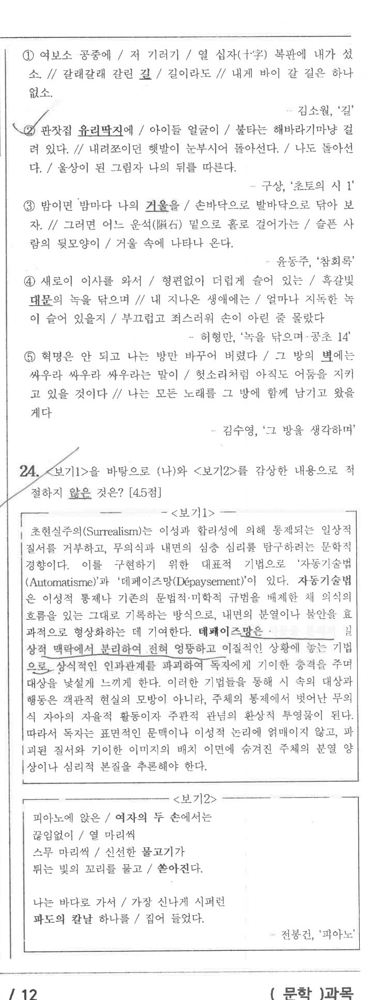
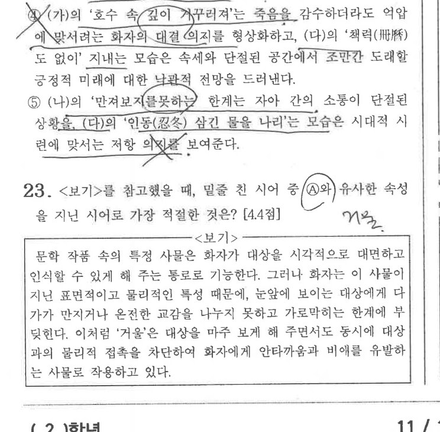
이 시험 앞에서는 세 가지 공부법이 통하지 않는다. 첫째, 본문 수록 작품의 해설을 암기하는 공부 — 〈보기〉와 선지로 결합되는 외부 작품이 10편 이상이라 외운 범위 밖에서 승부가 난다. 둘째, 답만 맞히고 넘어가는 문제 풀이 — '있는 대로 고르기' 조합형은 다섯 진술 전부에 근거를 대지 못하면 4점대 문항이 통째로 사라진다. 셋째, 〈보기〉를 대충 읽고 선지로 직행하는 습관 — 준거 결합 32.2점은 〈보기〉의 규정 문장과 선지의 미세한 어긋남에서 갈리기 때문이다.